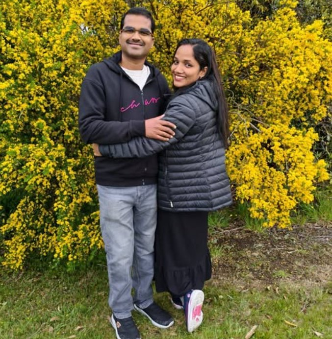
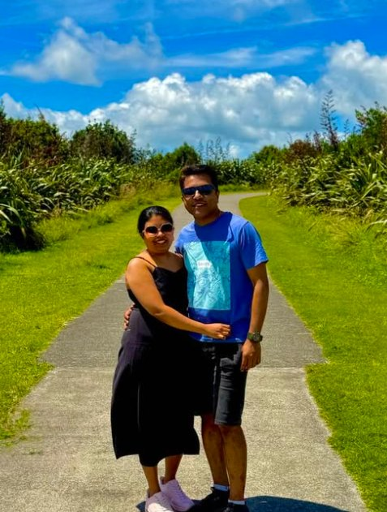
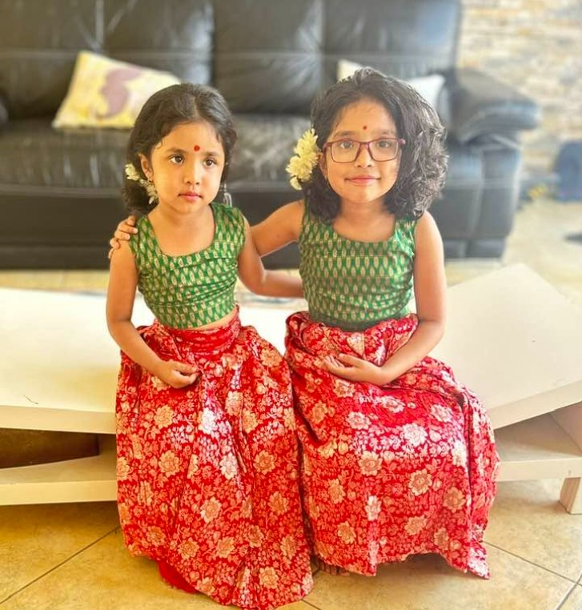
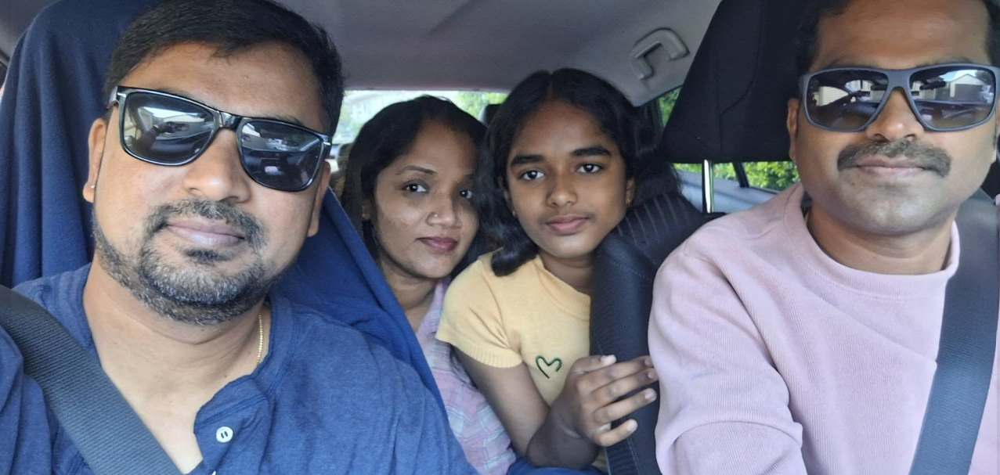
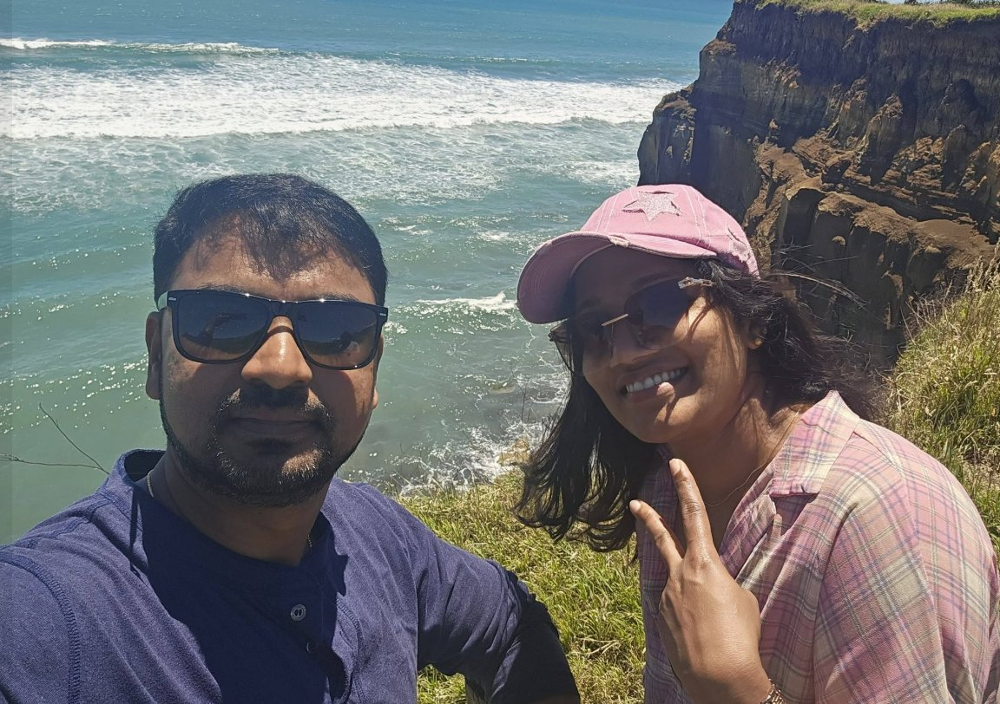
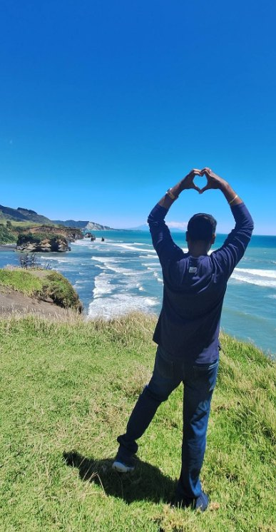
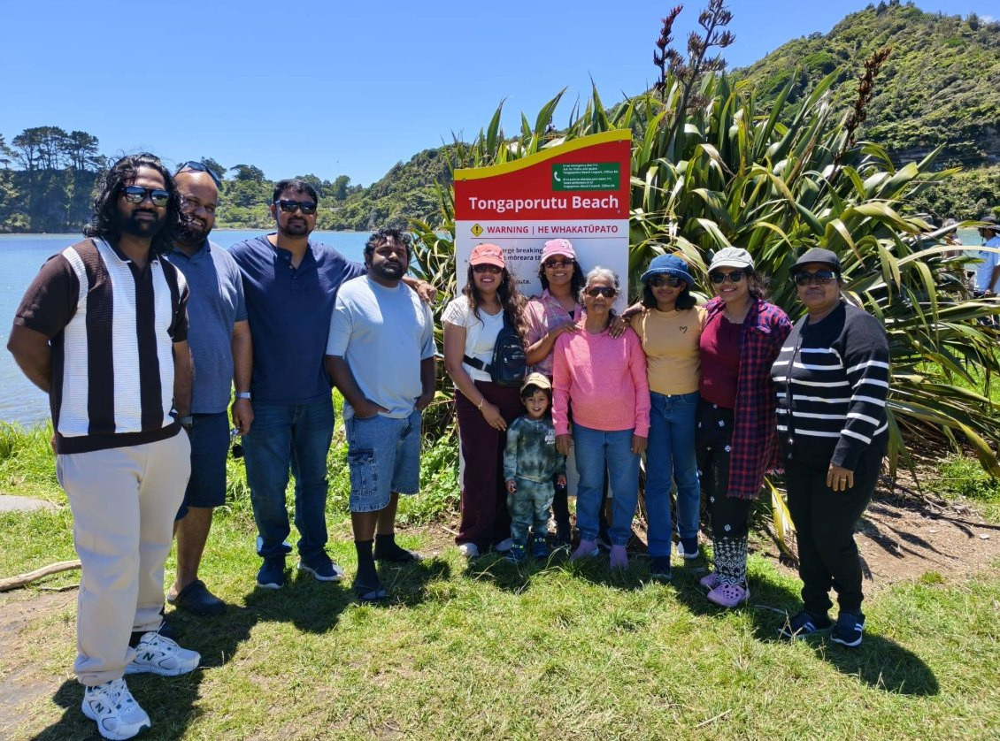
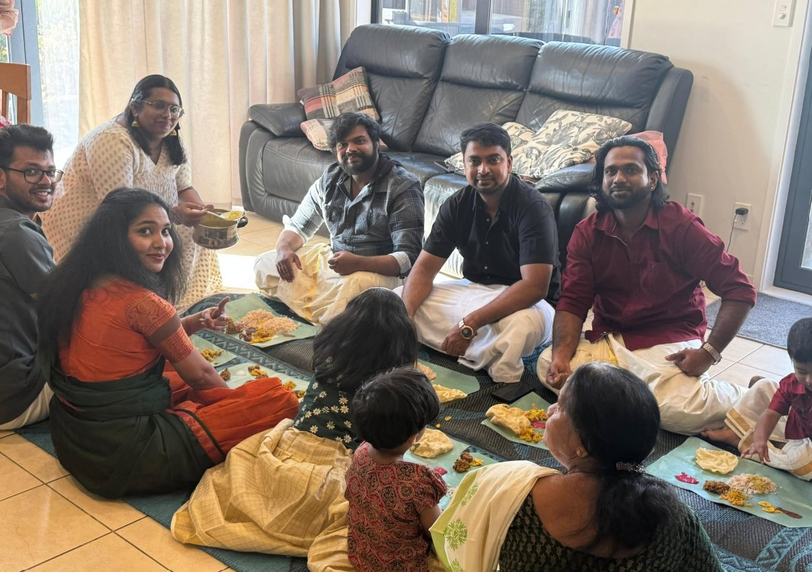

In August 2025, Neethu, Anu and Rezon arrived in Palmerston North to begin new roles as Anaesthetic Technicians.
They came with years of experience behind them, families beside them, and all the usual mixture of excitement and nerves that comes with moving your life thousands of miles from everything familiar.
A year later, when you look through their photographs, it is striking how much life has happened in such a short time.
There have been new jobs, new schools and new friendships. There have been family days out, celebrations, incredible scenery and the excitement of seeing snow for the very first time.
And, gradually, somewhere that was completely unfamiliar has started to feel like home.

Their story actually began years earlier
Neethu and Anu first worked together in Kerala, where Anu was Neethu’s manager. They became close friends, and stayed that way when their careers took them in different directions.
Both went on to work for leading private healthcare organisations in the Middle East. Anu moved to Abu Dhabi, while Neethu built her career in Qatar.
Living in different countries, they kept talking about the future. New Zealand came up again and again, until talking about it turned into planning it, together.
“Neethu and I have known each other for many years. I was her manager when we worked together in Kerala, but we became close friends and stayed that way even when our careers took us to different countries. I moved to Abu Dhabi and Neethu to Qatar, but we kept talking about the future and eventually started planning our move to New Zealand together.”
Anu
“Anu was actually my manager when we worked together in Kerala. Even after our careers took us to different countries, we stayed very close. We talked about New Zealand for a long time and planned the move together, so to actually be here now, with our families living close to each other, feels very special.”
Neethu
It was in Abu Dhabi that Anu met Rezon through work.
Years later, their paths would come together again — this time not in India or the Middle East, but in Palmerston North, New Zealand.
Today, all three work in the same city. Their families live close to one another and have become incredibly close.
“I met Anu when we were both working in Abu Dhabi, and now somehow our journeys have brought all three of our families to the same city in New Zealand. We work together, our families spend time together and the children are growing up together. It is quite incredible when you think about it.”
Rezon


For three families making such a huge international move, having people around who understand exactly what that experience feels like has made a real difference.
Will we find our people?
One of the biggest questions when you move countries isn’t necessarily about the job.
For Neethu, Anu and Rezon’s families, friendships and community have become an important part of settling into life in Palmerston North.
The Kerala community has helped provide that connection with home. Through the Kerala Society of Manawatū, there have been opportunities to meet other families, celebrate together and maintain the traditions and culture that remain such an important part of who they are.

“The Kerala Society of Manawatū has been a lovely part of our lives here. We can celebrate our culture and traditions, the children have that connection too, and at the same time we are building friendships and becoming part of our new community in New Zealand.”
Anu
At the same time, their lives have expanded far beyond the community they arrived with.
There are colleagues, school friends, neighbours and new friendships that simply didn’t exist a year ago.
The hospital has played an important part too. They have found it welcoming and community-focused, with a sense that people genuinely know and support one another.
“The hospital has been so welcoming and community-focused. When you move such a long way from home, the people around you matter enormously. We have felt genuinely welcomed, both at work and in the wider community.”
Rezon
For healthcare professionals coming from large organisations overseas, that feeling of belonging can be one of the unexpected pleasures of working somewhere like Palmerston North.

And then there was the weather…
Nobody is going to pretend that moving from Kerala, Abu Dhabi or Qatar to the lower North Island doesn’t require a little adjustment.
It gets cold.
Properly cold.
But even that has brought experiences the families will never forget — including seeing snow for the first time.

Something as ordinary to many New Zealanders as a cold winter’s day can be completely magical when you’ve grown up somewhere where snow existed mostly in pictures.
Those firsts have become part of the family’s New Zealand story.
“New Zealand is even more beautiful than I imagined. There have been so many firsts in our first year, including seeing snow for the first time! Coming from Kerala and then Qatar, I am still getting used to the cold, but experiencing all of this together as a family has been amazing.”
Neethu
Watching the children thrive
Perhaps the biggest measure of whether the move has worked, though, has been the children.
They are happy.
They are enjoying school, making friends and embracing a very different way of life.
And outside school, there is space.
Space to run around. Space to explore. Weekends outdoors. Road trips. Parks, mountains, lakes and countryside that still sometimes doesn’t quite look real.



For their parents, being able to give their children that kind of childhood was part of the dream.
Now they’re living it.
“The biggest thing for me has been seeing how happy the children are. They love their school and have so much opportunity to be outdoors. This is the kind of childhood and family life we dreamed about when we started talking about New Zealand.”
Neethu
The outdoor lifestyle they imagined when they were considering New Zealand isn’t something reserved for holidays. It has become part of ordinary family life.
Discovering New Zealand
And there is still so much to discover.
“What I love is the life we can have outside work. There is always somewhere beautiful to explore and somewhere for the children to be outdoors. We wanted more time and more experiences together as families, and that is probably what New Zealand has given us most.”
Rezon
One of the things the families have loved most is simply how stunningly beautiful New Zealand is.
The landscape changes constantly — mountains, coastlines, forests, lakes and huge open spaces — and Palmerston North gives them a base from which so much of the North Island can be explored.



Their photographs from this first year don’t really look like photographs from a relocation.
They look like photographs of a life.
Children playing. Families together. Friends celebrating. New places being discovered. First experiences becoming memories.
One year later
Moving country isn’t easy.
There is paperwork and registration. There are goodbyes. There is jet lag, unfamiliar systems and the strange experience of rebuilding the everyday things you once took for granted.
And yes, sometimes you really miss home.
But then there are moments when you realise how far you’ve come.
“Before you move, you think about so many things. Will we settle? Will the children be happy? Will we make friends? A year later, the children are thriving, we have a wonderful group of friends around us and Palmerston North genuinely feels like home.”
Anu

For Neethu, Anu and Rezon, a friendship and professional connection that began years ago in Kerala and Abu Dhabi, and a move two friends planned together from two different countries, has led to three families building their lives alongside one another in a small New Zealand city.
They work together.
Their children are growing up together.
Their families have become close.
And Palmerston North has become home.
Sometimes an international move isn’t simply about finding a new job.
It’s about discovering what your family’s life could look like somewhere new.
Wondering what your family’s life could look like?
The job gets you there. The life you build is the reason for going. Start with the place, the work, or a conversation.